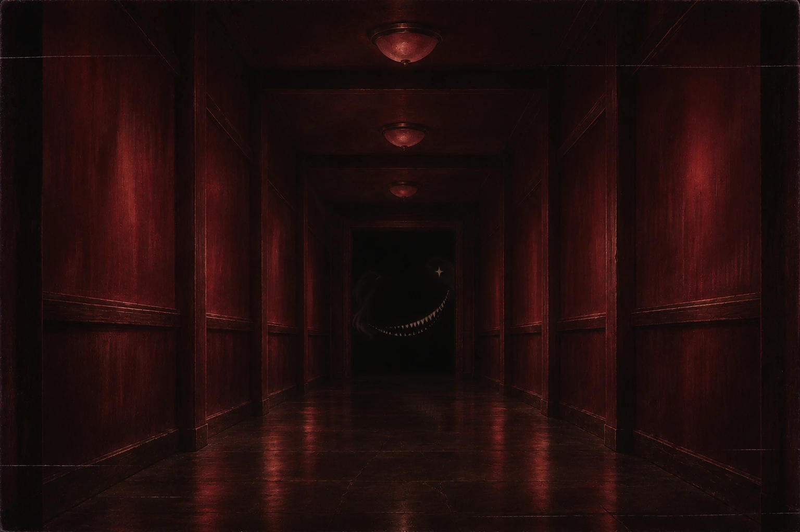

日常闲聊

日常闲聊 · 兴趣话题 · 心情整理向下浏览
米拉能做什么
从小话题开始，
自然地继续聊。
不必准备好一段完整的故事。
先说出你此刻想到的就好。
从今天的小事
一句近况，也能自然聊下去兴趣话题
沿着喜欢的事
多聊一会儿
音乐、天气和新发现都可以安静结束
说一声晚安，
就到这里
清楚地结束每一次聊天如何开始
一段轻松的对话，
只需要三步。
米拉的安静时段有一个明确的收尾：你说晚安，这次对话就结束。
- 01
选一个话题
从日常、兴趣或心情开始。
- 02
顺着聊下去
米拉接住你刚刚说的内容。
- 03
说晚安
聊天结束，时间留给自己。
日常对话示例
从今天有点累，
到一句晚安。
看看一次完整的轻声对话怎样开始、怎样自然地结束。
米拉 · 安静时段
示例会话换一个开场话题
今天想从什么说起？23:41:00
今天有点累。23:41:02
那我们先不急着做什么。愿意说说今天最累的一件事吗？23:41:05
我先去休息了。晚安。23:41:19
好，晚安。今天的对话到这里。23:41:20
对话已结束 · 23:41:21
预设对话示例 · 选择仅在本页生效，不会发送或保存。
回顾 · 23:41
刚刚的对话，
已经收好了。
一条短短的时间线，方便你回想聊到哪里。
最近一次对话已结束
今天有点累。
那我们先不急着做什么。愿意说说今天最累的一件事吗？
你说晚安 · 对话结束
回顾已更新

安静时段 · 米拉的待机插画回顾只保留文字和静态封面
会话记录 · 23:41
同一段话，
出现了两次。
回顾里新增了一份记录。消息内容相同，时间却早了一秒。
米拉 · 聊天记录23:41
今天有点累。
那我们先不急着做什么。愿意说说今天最累的一件事吗？
今天有点累。
那我们先不急着做什么。愿意说说今天最累的一件事吗？
两份记录只差一秒。
我先去休息了。晚安。23:41:19
好，晚安。今天的对话到这里。23:41:20
对话已结束 · 23:41:21
连接状态
会话已经结束。
输出还在继续。
检查记录显示，结束之后仍有一条内容正在发出。
诊断摘要23:41:24
会话已结束 · 23:41:21
输入队列已清空 · 0 条
输出队列 发送中 · 1 条
读取来源最后一次回放
帮助中心
回顾里没有视频，
为什么正在播放？
我没有录制，为什么会出现影像？
回顾原本只显示文字和一张静态封面，不会录制视频。
封面来源待机插画 04 → 实时画面
读取来源：走廊画面 · 04
正在打开最后一段影像…
最后一次回放
画面没有
停在晚安。
走廊 · 摄像头 04
读取回放 · 23:41:24


REC 23:41:24
米拉 · 新消息 · 23:41:25
我先去休息了。晚安。